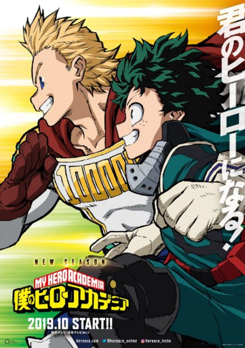
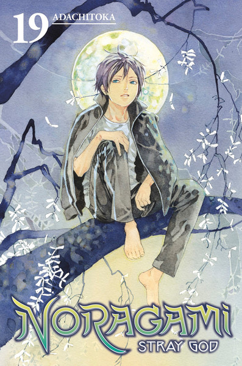

Películas que puedes ver

Harry Potter
Harry Potter es una serie de novelas fantásticas escrita por la autora británica J. K. Rowling, en la que se describen las aventuras del joven aprendiz de magia y hechicería Harry Potter y sus amigos Hermione Granger y Ron Weasley, durante los años que pasan en el Colegio Hogwarts de Magia y Hechicería.
Divergente
En una sociedad futura, la gente está dividida entre facciones basadas en sus personalidades. Después de que una joven descubre que ella es una Divergente y nunca será de algún grupo, descubre un complot para destruir a quienes con como ella.
Avengers Endgame
Los Vengadores restantes deben encontrar una manera de recuperar a sus aliados para un enfrentamiento épico con Thanos, el malvado que diezmó el planeta y el universo
Libros/Mangas que pueden ser interesantes
-

Rayer Player One
Año 2045: el adolescente Wade Watts es solo una de las millones de personas que se evaden del sombrío mundo real para sumergirse en un mundo utópico virtual donde todo es posible: OASIS. Wade participa en la búsqueda del tesoro que el creador de este mundo imaginario dejó oculto en su obra. No obstante, hay gente muy peligrosa compitiendo contra él.
-
Harry Potter
Harry Potter es una serie de novelas fantásticas escrita por la autora británica J. K. Rowling, en la que se describen las aventuras del joven aprendiz de magia y hechicería Harry Potter y sus amigos Hermione Granger y Ron Weasley, durante los años que pasan en el Colegio Hogwarts de Magia y Hechicería.
-

Boku no Hero
My Hero Academia es una serie de manga escrita e ilustrada por Kōhei Horikoshi, basada en un one-shot realizado por el mismo autor y publicado en el quinto volumen del manga Ōmagadoki Dōbutsuen bajo el nombre de My Hero. El 11 de enero de 2015, fue lanzado un VOMIC basado en el manga.
-

Noragami
Noragami es una serie de manga escrita e ilustrada por Adachitoka. Comenzó su publicación en la revista Monthly Shōnen Magazine de la editorial Kōdansha en 2011. Hasta la fecha, el manga ha recopilado un total de dieciocho volúmenes